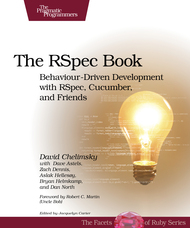

Behavioral driven development and the future
The evolution of Automated Testing
Created by Todd Wolfson / @twolfsn / github/twolfson
Live coding
BDD Example
Why are tests important?
Why do cars have brakes?
Why are tests important?
Why do cars have brakes?
So you can drive faster.
Absolving confusion
Time to unlearn misconceptions
TDD/BDD
- Methodologies for automated verification of expected functionality.
- Manual testing is not automated and therefore cannot be considered TDD/BDD.
- Differences are in the format (e.g. JSON, YAML, XML).
Test-first vs test-later approach
It's all about the situation
- Neither TDD nor BDD state that tests must be written first.
-
In some situations, test-first is appropriate.
- e.g. You have solidified the API
-
In other situations, test-later is appropriate.
- e.g. You have the idea but not the specifics
100% code coverage is not required
Scenario strikes again
- Code coverage has very little to do with TDD/BDD.
-
In some situations, 100% code coverage is appropriate.
- e.g. You have very little fat
- OR guaranteed specification will never change.
-
In other situations, lower coverage is appropriate.
- e.g. You are in the early stages of development
- OR creating experimental features.
Implementation vs Methodology
- Once again, TDD/BDD are about a format of tests and using them to move faster.
- PhantomJS is a testing harness for manipulating a browser.
- CasperJS is a combination of testing framework (TDD) and harness.
- Selenium is a combination of testing framework (TDD), runner, and harness.
</rant>
Before automation
Manual testing

- Manually cross-check results
- Have people poke at program until it breaks
Birth of TDD
SUnit (1994)

- Kent Beck working mainly in Smalltalk.
- Tried out a few experiments and not quite settled.
- On a consulting gig, converted latest “workspace” concept into classical concept.
SUnit (1994)
Class: SetTestCase
superclass: TestCase
instance variables: empty full
SetTestCase>>setUp
empty := Set new.
full := Set
with: #abc
with: 5
SetTestCase>>testAdd
empty add: 5.
self should: [empty includes: 5]
SetTestCase>>testRemove
full remove: 5.
self should: [full includes: #abc].
self shouldnt: [full includes: 5]
| suite |
suite := TestSuite named: 'Set Tests'.
suite addTestCase: (SetTestCase selector: #testAdd).
suite addTestCase: (SetTestCase selector: #testRemove).
^suite
JUnit (1995 - 2000)
- In 1995, Kent Beck and Erich Gamma invent JUnit on plane ride to OopsLa.
- In 2000, junit.org is registered and published to Sourceforge.
JUnit (1995 - 2000)
public class MoneyTest extends TestCase {
private Money f12CHF;
private Money f14CHF;
private Money f28USD;
protected void setUp() {
f12CHF= new Money(12, "CHF");
f14CHF= new Money(14, "CHF");
f28USD= new Money(28, "USD");
}
}
public void testSimpleAdd() {
Money m12CHF= new Money(12, "CHF");
Money m14CHF= new Money(14, "CHF");
Money expected= new Money(26, "CHF");
Money result= m12CHF.add(m14CHF);
assert(expected.equals(result));
}
TestSuite suite= new TestSuite();
suite.addTest(new MoneyTest("testSimpleAdd"));
TestResult result= suite.run();
Evolution into BDD
Dan North (2006)

Wants to convert agile story template into scenarios
As a [X]
I want [Y]
so that [Z]
Given some initial context,
When an event occurs,
then ensure some outcomes.
Dan North (2006)
Inside of blog posts, already outlining features and benefits. Even has the name BDD already.
Given the account is in credit
And the card is valid
And the dispenser contains cash
When the customer requests cash
Then ensure the account is debited
And ensure cash is dispensed
And ensure the card is returned
Dan North (2006)
Converted story template looks like
public class AccountIsInCredit implements Given {
public void setup(World world) {
...
}
}
public class CardIsValid implements Given {
public void setup(World world) {
...
}
}
public class CustomerRequestsCash implements Event {
public void occurIn(World world) {
...
}
}
jBehave (2006)

- Published by Dan North and Chris Matts
jBehave (2006)
public class TraderSteps {
private Stock stock;
@Given("a stock of symbol $symbol and a threshold of $threshold")
public void aStock(String symbol, double threshold) {
stock = new Stock(symbol, threshold);
}
@When("the stock is traded at $price")
public void theStockIsTradedAt(double price) {
stock.tradeAt(price);
}
@Then("the alert status should be $status")
public void theAlertStatusShouldBe(String status) {
ensureThat(stock.getStatus().name(), equalTo(status));
}
}
RSpec (2006)

- Published by Steven Baker
RSpec (2006)
Very indicative of current mocha implementation
describe Hash do
before(:each) do
@hash = Hash.new(:hello => 'world')
end
it "should return a blank instance" do
Hash.new.should eql({})
end
it "should hash the correct information in a key" do
@hash[:hello].should eql('world')
end
end
Cucumber (2008)
- Released as a gem by Aslak Hellesøy
- First framework to separate specification from implementation.
- Re-embraces Agile/XP story template
Cucumber (2008)
Feature: Addition
In order to avoid silly mistakes
As a math idiot
I want to be told the sum of two numbers
Scenario Outline: Add two numbers
Given I have entered <input_1> into the calculator
And I have entered <input_2> into the calculator
When I press <button>
Then the result should be <output> on the screen
Before do
@calc = Calculator.new
end
Given /I have entered (\d+) into the calculator/ do |n|
@calc.push n.to_i
end
When /I press (\w+)/ do |op|
@result = @calc.send op
end
Then /the result should be (.*) on the screen/ do |result|
@result.should == result.to_f
end
Flat files (???)
- Tests represented as input/output files
- Language agnostic since they require a framework to run with
-
In the words of substack:
It's the universal interface. Standard in and standard out.
Flat files (???)
Mustache implements its files this way
// Test data
{
name: "Chris",
value: 10000,
taxed_value: 6000,
in_ca: true
}
// Mustache template
Hello {{name}}
You have just won ${{value}}!
{{#in_ca}}
Well, ${{ taxed_value }}, after taxes.
{{/in_ca}}
// Expected output
Hello Chris
You have just won $10000!
Well, $6000, after taxes.
Review + Break
There are 4 common formats for tests
- TDD - Functional 1:1 testing of features
-
BDD (Specification / Joint)
- Uses keywords Given, When, Then.
- 1:1 testing per features.
-
BDD (Behavioral)
- Keywords used are describe and it.
- Context nesting allows double-duty for methods.
-
BDD (Specification / Separated)
- Creates 2 files (a story, an implementation).
- Keywords are Given, When, Then.
- Re-use of methods across tests.
Modern time. Modern space.
var now = new Date();
JUnit (circa 2012)
public class MyClassTest {
@BeforeClass
public static void testSetup() {
}
@AfterClass
public static void testCleanup() {
// Teardown for data used by the unit tests
}
@Test(expected = IllegalArgumentException.class)
public void testExceptionIsThrown() {
MyClass tester = new MyClass();
tester.multiply(1000, 5);
}
@Test
public void testMultiply() {
MyClass tester = new MyClass();
assertEquals("10 x 5 must be 50", 50, tester.multiply(10, 5));
}
}
qunit
test( "ok test", function() {
ok( true, "true succeeds" );
ok( "non-empty", "non-empty string succeeds" );
ok( false, "false fails" );
ok( 0, "0 fails" );
ok( NaN, "NaN fails" );
ok( "", "empty string fails" );
ok( null, "null fails" );
ok( undefined, "undefined fails" );
});
nodeunit
module.exports = {
setUp: function (callback) {
this.foo = 'bar';
callback();
},
tearDown: function (callback) {
// clean up
callback();
},
test1: function (test) {
test.equals(this.foo, 'bar');
test.done();
}
};
Expresso
module.exports = {
'test String#length': function(beforeExit, assert) {
assert.equal(6, 'foobar'.length);
}
};
tape
test('timing test', function (t) {
t.plan(2);
t.equal(typeof Date.now, 'function');
var start = Date.now();
setTimeout(function () {
t.equal(Date.now() - start, 100);
}, 100);
});
Jasmine
Good for synchronous. Horrible for asynchronous.
describe("A suite is just a function", function() {
var a;
it("and so is a spec", function() {
a = true;
expect(a).toBe(true);
});
});
describe("Asynchronous specs", function() {
var value, flag;
it("should support async execution [...]", function() {
runs(function() {
flag = false;
value = 0;
setTimeout(function() {
flag = true;
}, 500);
});
waitsFor(function() {
value++;
return flag;
}, "The Value should be incremented", 750);
runs(function() {
expect(value).toBeGreaterThan(0);
});
});
});
Cucumber.js
Feature: Example feature
As a user of cucumber.js
I want to have documentation on cucumber
So that I can concentrate on building awesome applications
Scenario: Reading documentation
Given I am on the Cucumber.js Github repository
When I go to the README file
Then I should see "Usage" as the page title
module.exports = function () {
this.World = require("../support/world.js").World; // overwrite default World constructor
this.Given(/^I am on the Cucumber.js Github repository$/, function(callback) {
// Express the regexp above with the code you wish you had.
// `this` is set to a new this.World instance.
// i.e. you may use this.browser to execute the step:
this.visit('http://github.com/cucumber/cucumber-js', callback);
// The callback is passed to visit() so that when the job's finished, the next step can
// be executed by Cucumber.
});
this.When(/^I go to the README file$/, function(callback) {
// Express the regexp above with the code you wish you had. Call callback() at the end
// of the step, or callback.pending() if the step is not yet implemented:
callback.pending();
});
this.Then(/^I should see "(.*)" as the page title$/, function(title, callback) {
// matching groups are passed as parameters to the step definition
if (!this.isOnPageWithTitle(title))
// You can make steps fail by calling the `fail()` function on the callback:
callback.fail(new Error("Expected to be on page with title " + title));
else
callback();
});
};
vows
Designed for async/parallel tests in node.
vows.describe('The Good Things').addBatch({
'A banana': {
topic: new(Banana),
'when peeled *synchronously*': {
topic: function (banana) {
return banana.peelSync();
},
'returns a `PeeledBanana`': function (result) {
assert.instanceOf (result, PeeledBanana);
}
},
'when peeled *asynchronously*': {
topic: function (banana) {
banana.peel(this.callback);
},
'results in a `PeeledBanana`': function (err, result) {
assert.instanceOf (result, PeeledBanana);
}
}
}
}).export(module); // Export the Suite
mocha
describe('Array', function(){
before(function(){
// ...
});
describe('#indexOf()', function(){
it('should return -1 when not present', function(){
[1,2,3].indexOf(4).should.equal(-1);
});
});
});
suite('Array', function(){
setup(function(){
// ...
});
suite('#indexOf()', function(){
test('should return -1 when not present', function(){
assert.equal(-1, [1,2,3].indexOf(4));
});
});
});
intern
define([
'intern!bdd',
'intern/chai!expect',
'../Request'
], function (bdd, expect, Request) {
with (bdd) {
describe('demo', function () {
var request,
url = 'https://github.com/theintern/intern';
// before the suite starts
before(function () {
request = new Request();
});
// before each test executes
beforeEach(function () {
request.reset();
});
// after the suite is done
after(function () {
request.cleanup();
});
// multiple methods can be registered and will be executed in order of registration
after(function () {
if (!request.cleaned) {
throw new Error('Request should have been cleaned up after suite execution.');
}
// these methods can be made asynchronous as well by returning a promise
});
// asynchronous test for Promises/A-based interfaces
it('should demonstrate a Promises/A-based asynchronous test', function () {
// `getUrl` returns a promise
return request.getUrl(url).then(function (result) {
expect(result.url).to.equal(url);
expect(result.data.indexOf('next-generation') > -1).to.be.true;
});
});
// asynchronous test for callback-based interfaces
it('should demonstrate a callback-based asynchronous test', function () {
// test will time out after 1 second
var dfd = this.async(1000);
// dfd.callback resolves the promise as long as no errors are thrown from within the callback function
request.getUrlCallback(url, dfd.callback(function () {
expect(result.url).to.equal(url);
expect(result.data.indexOf('next-generation') > -1).to.be.true;
});
// no need to return the promise; calling `async` makes the test async
});
// nested suites work too
describe('xhr', function () {
// synchronous test
it('should run a synchronous test', function () {
expect(request.xhr).to.exist;
});
});
});
}
});
Time to experiment
doubleshot (2013)
- Wanted slimmer tests and at-a-glance specifications.
- Loved vows syntax.
- Tried out a few things for cross-compiling vows into mocha but they failed (crossbones, sculptor).
- Discovered cool features upon writing it.
doubleshot (2013)
Live code example
Behavioral driven development and the future
The evolution of Automated Testing
Created by Todd Wolfson / @twolfsn / github/twolfson